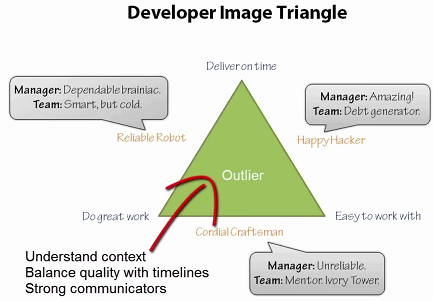
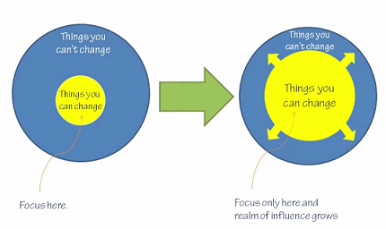

How to Become an Outlier¶
Do you want to be an outlier? How do you measure success? Money? Friends and Family? Recognition? Fame? Making a difference? Does your definition of success drive the direction of your career? ... Or is it the other way around?
Contents
If you want to be an outlier, you may be out of place, have to compromise on some areas in your life and people may see you as weirdo.
This is the price you need to pay
Then you have to ask yourself what is the reason you want to be an outlier?
Okay, if you still want to become an Outlier, there are three practices:
- Not enough time to learn and practice => Command your time
- People don’t respect the skills we have => Hack your image
- We let chance dictate the trajectory of our careers => Own your trajectory
Command Your Time¶
- If you love life, don’t waste time, for time is what life is made up of
- – Bruce Lee
The amount of success you have in life is roughly equivalent to the amount of time you spend doing things people want.
Practice¶
What is Deliberate Practice?
It’s not:
- Staying in your comfort zone
- Mindless repetition
- Watching others
It’s this:
- Doing things you’re not good at
- Striving to improve
- Evaluating your performance
Habits build experts, do commitment to something e.g. stand half of your day then become an habit
- You do something all day long, don’t you? The only difference is that you do a great many things and I do one
- – Thomas Edison
Cut the noise¶
Development is just like sleep. If you are interrupted a lot and it will take a lot of time to go back to zone again.
The less news you consume, the bigger the advantage you have. The problem is the news bring limited value to your life
Delegate the work can let you have more time to focus on more rewarding things to you. Automate the trivial tasks like billing payment stuff
- Your biggest enemies are your bills. The cheaper you can live, the greater your options.
- – Mark Cuban
Hack Your Image¶
- In order to do the big things, you have to let the small bad things happen
- – Tim Ferriss
Perception is Reality
Pick two from the following items: * Be easy to work with * Do great work * Deliver on time
It is difficult to make yourself good at everything, and make everyone happy. You have to make tough decision. Of course to keep a good balance can be an good option for you.
Self image === greatest constraint
Are you selling yourself short?
- It’s not who we are that keeps us from where we want to be - it’s who we THINK we are.
- – Lisa Sayers
It will be explained in future blog about branding and communication.
You will always be limited due to your position and authority. To be constructive and realistic, try to maximize the impact and focus what you can do.
Own Your Trajectory¶
Find a job to learn rather only to earn money
Value of Learning
- Increased income
- New job opportunities
- Reputation
- Opportunity to travel
- Just for fun
It is up to you to decide which of these you value most!
Spread your investment: Learn more skills
You can do the same thing as CEO and government leader, predict the trend, make scenarios and plan for actions
- Make long term strategic decision: Ask questions about what you don’t want before what you want.
- Facing customers directly rather than always programming. Selling, presentation, marketing?
- Should I do this? => If I do not do this, will I regret it?
Written by Binwei@Gdynia